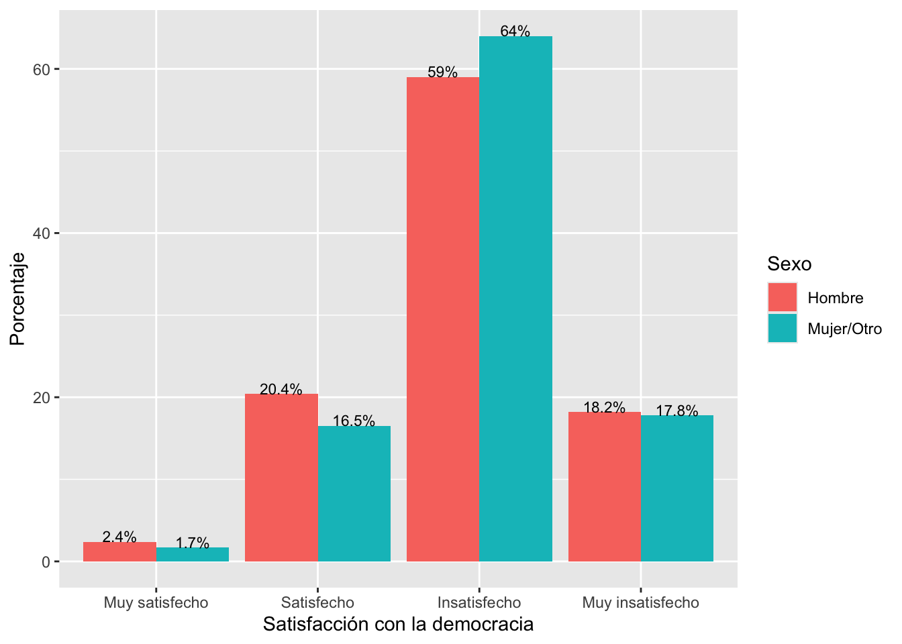
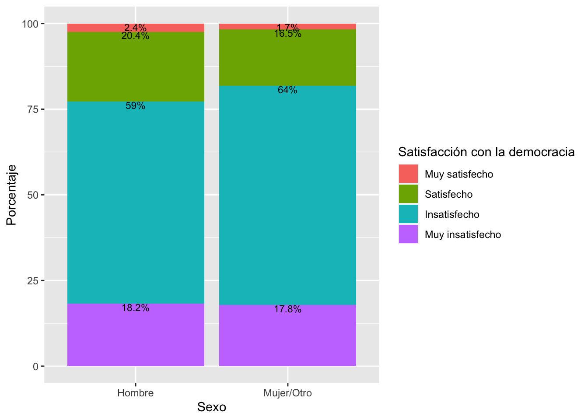

Introducción
La prueba t y la prueba de ANOVA analiza el impacto de una variable
independiente categórica en una variable dependiente numérica. El paso
que vamos a dar en esta sección es analizar la relación
bivariada entre dos variables de factor (o categóricas). Esta
evaluación se realiza mediante la prueba de chi-cuadrado.
Chi-cuadrado:
Variable independiente (país) -> Variable dependiente (apoyo a
la democracia).
Variable independiente (situación económica) -> Variable
dependiente (satisfacción con la vida)
Variable independiente(nivel educativo) -> Variable
dependiente (satisfacción con la democracia)
Como dijimos en clases anteriores, la comparación de proporciones es
un caso especial de lo que veremos ahora.
Tablas de contingencia
Se trata de tablas de doble entrada (como mínimo) para analizar los
datos de variables categóricas. Una variable va en las filas y otra en
las columnas. Se puede tener los totales por filas o por columnas, que
se llaman “distribuciones marginales” y que coinciden con la
distribución de la variable individual.
Se puede calcular porcentajes de 3 maneras:
Se recomienda que la variable independiente sea colocada en las
columnas y la variable dependiente en las filas. Si se calcula los
porcentajes por columnas de esta manera, se podrá comparar las
distribuciones condicionales de la variable dependiente por cada grupo
de la variable independiente.
En este documento vamos a trabajar con el reporte comparado El
Pulso de la Democracia, disponible aquí.
Este reporte presenta los principales hallazgos del proyecto del
Barómetro de las Américas, organizado por el Proyecto de Opinión Pública
en América Latina (LAPOP, por sus siglas en
inglés). En este documento se reportan los resultados de la última ronda
disponible de 2018/19.
Pueden descargar los datos de manera libre aquí.](http://datasets.americasbarometer.org/database/login.php).)
En este enlace, se pueden registrar o entrar como “Free User”. En el
buscador, se puede ingresar el texto “2021”. Ahí se tendrá acceso a las
bases de datos completas de cada país de la ronda 2021en versión para
STATA. Se descarga la base de datos en formato .dta. Una vez descargada
y guardada en el directorio de trabajo, se tiene que leer la base de
datos como un objeto dataframe en R. El cuestionario de esta base de
datos puede ser visto en este enlace.
library(rio)
peru = import("PER_2021_LAPOP_AmericasBarometer_v1.2_w.dta")
Desde la pag. 20 del reporte se hace una evaluación de la democracia
en la práctica. En particular, se trabaja con la variable PN4. En
general, ¿usted diría que está muy satisfecho(a), satisfecho(a),
insatisfecho(a) o muy insatisfecho(a) con la forma en que la democracia
funciona en Perú. El reporte se indica que los datos se recodifican en
una variable dicotómica. En este documento vamos a trabajar con la
variable original. Esta variable es una variable categórica, ordinal o
de factor. En el Gráfico 1.14 del reporte se presenta una evaluación de
la satisfacción con la democracia por variables demográficas y
socioeconómica, como nivel educativo, quintiles de riqueza, lugar de
residencia, género o grupos de edad. Es decir, se usa la satisfacción
con la democracia como variable dependiente y a cada variable
demográficas y socioeconómica como variables independientes.
Por ejemplo, se reporta que entre los hombres, el 42.3% están
satisfechos con la democracia, mientras que entre las mujeres, este
porcentaje disminuye a 36.9%.
Antes de proceder, tenemos que recodificar las variables, ponerlas en
forma de factor y etiquetar.
library(tidyverse)
peru = peru |>
mutate(sexo=recode(q1tb, '1' = '1', '2' = '2', '3' = '2')) |>
mutate(sexo = factor(sexo, labels=c("Hombre", "Mujer/Otro")))
table(peru$sexo)
##
## Hombre Mujer/Otro
## 1617 1421
Lo mismo para la variable PN4 que se transforma en la variable
“satis”.
peru = peru |>
mutate(satis = factor(pn4, labels= c("Muy satisfecho", "Satisfecho",
"Insatisfecho", "Muy insatisfecho")))
tabla1 = table(peru$satis)
tabla1
##
## Muy satisfecho Satisfecho Insatisfecho Muy insatisfecho
## 31 274 905 266
Para calcular la tabla de satisfacción con la democracia,
independiente del género de la persona, se puede calcular los
porcentajes de esta variable con el comando prop.table. Se
multuplica por 100 para tener el formato de porcentaje.
library(knitr)
tabla1 |>
prop.table()*100
##
## Muy satisfecho Satisfecho Insatisfecho Muy insatisfecho
## 2.100271 18.563686 61.314363 18.021680
Ahora, se puede calcular la tabla de contingencia entre satisfacción
y género. El comando table nos brinda las frecuencias
absolutas del cruce entre ambas variables. La variable dependiente
“satisfacción con la democracia” se ubica en las filas y la variable
independiente “sexo” en las columnas. Se verifica que las 31
observaciones que están muy satisfechas con la democracia, se dividen en
19 hombres y 12 mujeres.
tabla2 = table(peru$satis, peru$sexo)
tabla2
##
## Hombre Mujer/Otro
## Muy satisfecho 19 12
## Satisfecho 161 113
## Insatisfecho 466 439
## Muy insatisfecho 144 122
Para calcular las frecuencias relativas, se tiene que usar el comando
prop.table. Se agrega la especificación (2)
para indicar que se quiere las proporciones sobre las columnas. Se sigue
con el comando round para eliminar los decimales
innecesarios y finalmente se usa addmargins para verificar
la suma de proporciones sobre las columnas.
tabla2 = tabla2 |>
prop.table(2) |>
round(3)*100
tabla2
##
## Hombre Mujer/Otro
## Muy satisfecho 2.4 1.7
## Satisfecho 20.4 16.5
## Insatisfecho 59.0 64.0
## Muy insatisfecho 18.2 17.8
#prop.table(table(peru$satis, peru$genero))*100
#prop.table(table(peru$satis, peru$genero), 2)*100
En esta tabla se muestra las distribuciones condicionales de
satisfacción con la democracia por cada grupo de género. Por ejemplo, el
2.4% de los hombres se encuentras muy satisfechos con la democracia, un
porcentaje algo similar el 1.7% de las mujeres. El 20.4% de los hombres
se encuentran satisfechos con la democracia, 4 puntos porcentuales por
encima que las mujeres.
De esta manera, se pueden comparar los porcentajes por cada categoría
de la variable dependiente entre grupos de la variable independiente y,
además, se puede comparar con los porcentajes no condicionales de la
variable satisfacción con la democracia.
Gráficos bivariados categóricos
Para crear un gráfico se tiene que guardar la tabla como un
dataframe. Se usa el comando as.data.frame para salvar los
porcentajes y poder usarlos con el comando ggplot. Nótese
que el dataframe guarda los porcentajes en otro formato.
tabla3 = as.data.frame(tabla2)
tabla3
## Var1 Var2 Freq
## 1 Muy satisfecho Hombre 2.4
## 2 Satisfecho Hombre 20.4
## 3 Insatisfecho Hombre 59.0
## 4 Muy insatisfecho Hombre 18.2
## 5 Muy satisfecho Mujer/Otro 1.7
## 6 Satisfecho Mujer/Otro 16.5
## 7 Insatisfecho Mujer/Otro 64.0
## 8 Muy insatisfecho Mujer/Otro 17.8
En este caso, como tenemos 4 categorías para satisfacción con la
democracia y otras 2 para sexo, un gráfico de barras separadas crearía 8
barras.
library(ggplot2)
ggplot(data=tabla3, aes(x=Var1, y=Freq, fill=Var2))+
geom_bar(position = "dodge", stat="identity")+
geom_text(aes(label=paste(Freq, "%", sep="")),
position = position_dodge(width = 0.9),
vjust=0, size = 3)+
labs(x="Satisfacción con la democracia", y="Porcentaje", fill="Sexo")

Esta forma de graficar puede complicar la comparación en algunos
casos. Por eso, en otros casos, se prefiere el tipo de barras
apiladas.
ggplot(data=tabla3, aes(x=Var2, y=Freq, fill=Var1))+
geom_bar(position="stack", stat="identity")+
geom_text(aes(label=paste(Freq, "%", sep="")),
position = position_stack(), vjust=1, size = 3)+
labs(x="Sexo", y="Porcentaje", fill="Satisfacción con la democracia")

Independencia y dependencia
Decimos que dos variables categóricas son
estadísticamente independientes si las
distribuciones condicionales (poblacionales) son idénticas por cada
categoría de la variable independiente. Por ejemplo, la siguiente tabla,
si mostrara los porcentajes poblacionales condicionales, estos son
idénticos entre grupos de la variable independiente. Es decir,
independientemante de ser hombre o mujer, las distribución de
satisfacción por la democracia es la misma. Ser hombre o mujer no cambia
nada las opiniones con respecto a la satisfacción con la democracia.
| Muy satisfecho |
2.4% |
1.7% |
| Satisfecho |
20.4% |
16.5% |
| Insatisfecho |
59% |
64% |
| Muy insatisfecho |
9.8% |
8.3% |
VI: fuma ———> VD: cáncer de pulmón
| Cáncer al pulmón |
Fumador |
No fumador |
| Si desarrolla cáncer |
10 |
10 |
| No desarrolla cáncer |
90 |
90 |
| Total |
100% |
100% |
A medida que estos porcentajes difieren más entre sí, hay más
probabilidades que ambas variables estén relacionadas. En realidad, a
medida que estos porcentajes difieren más de la distribución no
condicional de la variable satisfacción con la democracia también habría
una mayor probabilidad de que estén relacionadas.
Prueba de independencia de chi-cuadrado
Se basa en la comparación de las frecuencias observadas (las
observaciones que se recoge en campo) versus las frecuencias esperadas
(las observaciones que debería haber en cada celda de la tabla si las
variables fueran independientes). En ese sentido \(H_0: f_e = f_o\) o lo que es lo mismo que
las variables son independientes.
Si no hubiera relación entre las variables, tendríamos los mismo
porcentajes reproducidos en las distribuciones condicionales.
| MS |
2.1% de hombres -> #observaciones si no hay relación
cuánto es el 2.1% de 1617 = 34 -> #obs si NO hubiera relación
Pero, 19 es lo realmente observado
(19-34)^2 |
2.1% de mujeres -> #observaciones si no hay relación
cuánto es el 2.1% de 1421 = 29.8 -> #obs si NO hubiera
relación
Pero, 12 es lo realmente observado
(12-29.8)^2 |
| S |
18.6% |
18.6% |
| I |
61.3% |
61.3% |
| MI |
18% |
18% |
|
100% |
100% |
Prueba estadística
El chi-cuadrado resume qué tan cerca están las frecuencias esperadas
de las frecuencias observadas. Mientras más pequeña la distancia en cada
celda, menos probabilidades de rechazar la hipótesis nula. Mientras la
distancia más grande en cada celda ,más probabilidades de rechazar la
hipótesis nula.
\[
\chi^2 = \sum\frac{(f_o-f_e)^2}{f_e}
\]
Si fo=fe en cada celda, entonces χ^2 = 0
Con el valor de \(\chi^2\) se
calcula un p-value, que tiene que ser menor de 0.05 para rechazar la
Ho.
Se requiere que haya al menos 5 observaciones en cada
celda
En R se usa el comando chisq.test para calcular el
estadístico y el p-value. Esta prueba es mejor guardarla en un objeto
nuevo
prueba = chisq.test(peru$satis, peru$sexo)
prueba$observed
## peru$sexo
## peru$satis Hombre Mujer/Otro
## Muy satisfecho 19 12
## Satisfecho 161 113
## Insatisfecho 466 439
## Muy insatisfecho 144 122
prueba$expected
## peru$sexo
## peru$satis Hombre Mujer/Otro
## Muy satisfecho 16.59214 14.40786
## Satisfecho 146.65312 127.34688
## Insatisfecho 484.38347 420.61653
## Muy insatisfecho 142.37127 123.62873
La primera tabla presenta las frecuencias observadas, que es lo que
realmente se recoge en campo. La segunda tabla presenta las frecuencias
esperadas (si no hubiera relación). Se comprueba los cálculos que se
hizo en la tabla anterior (las diferencias son debido a la aproximación
decimal).
El estadístico \(\chi^2\) resume las
diferencias entre las frecuencias observadas y esperadas en cada celda y
las suma de acuerdo a la fórmula.
prueba
##
## Pearson's Chi-squared test
##
## data: peru$satis and peru$sexo
## X-squared = 5.3129, df = 3, p-value = 0.1503
La prueba nos da como resultado un p-value < 0.15, por lo que NO
se puede rechazar la hipótesis nula y se concluye que no sabemos si
existe asociación/relación/dependencia entre las variables.
Tabla cruzada de satisfacción con la democracia según nivel
educativo
lapop = import("lapop21.RData")
El Gráfico 1.14 del reporte muestra los datos de satisfacción con la
democracia (según la variable recodificada dummy) por niveles educativo.
Como segundo ejemplo, aquí vamos a replicar esa relación usando la
variable original de tipo factor pero ahora usando la base de datos de
todos los países.
lapop = lapop |>
mutate(satis = factor(pn4, labels= c("Muy satisfecho", "Satisfecho",
"Insatisfecho", "Muy insatisfecho")))
table(peru$satis)
##
## Muy satisfecho Satisfecho Insatisfecho Muy insatisfecho
## 31 274 905 266
Vamos a recodificar la variable educación. La variable original “edr”
separa a los analfabetos de los que tienen primaria. Los analfabetos son
un grupo muy pequeño y podrían causar problemas.
Primero, creamos una variable “educ”, como el factor de “edr”.
lapop = lapop |>
mutate(educ = factor(edr))
Finalmente, se etiqueta.
lapop = lapop |>
mutate(educ = factor(educ, labels=c("Analfabeto", "Primaria",
"Secundaria", "Superior")))
table(lapop$educ)
##
## Analfabeto Primaria Secundaria Superior
## 1366 9812 24964 24106
Con la variable recodificada se puede calcular la tabla cruzada de
satisfacción con la democracia según niveles educativos.
tabla4 = table(lapop$satis, lapop$educ)
tabla4
##
## Analfabeto Primaria Secundaria Superior
## Muy satisfecho 90 445 846 585
## Satisfecho 230 1713 4302 4130
## Insatisfecho 174 1694 4759 4954
## Muy insatisfecho 93 690 1933 2142
tabla4 = tabla4 |>
prop.table(2) |>
round(3)*100
tabla4
##
## Analfabeto Primaria Secundaria Superior
## Muy satisfecho 15.3 9.8 7.1 5.0
## Satisfecho 39.2 37.7 36.3 35.0
## Insatisfecho 29.6 37.3 40.2 41.9
## Muy insatisfecho 15.8 15.2 16.3 18.1
Gráfico bivariado de satisfacción con la democracia según
educación
tabla5 = as.data.frame(tabla4)
tabla5
## Var1 Var2 Freq
## 1 Muy satisfecho Analfabeto 15.3
## 2 Satisfecho Analfabeto 39.2
## 3 Insatisfecho Analfabeto 29.6
## 4 Muy insatisfecho Analfabeto 15.8
## 5 Muy satisfecho Primaria 9.8
## 6 Satisfecho Primaria 37.7
## 7 Insatisfecho Primaria 37.3
## 8 Muy insatisfecho Primaria 15.2
## 9 Muy satisfecho Secundaria 7.1
## 10 Satisfecho Secundaria 36.3
## 11 Insatisfecho Secundaria 40.2
## 12 Muy insatisfecho Secundaria 16.3
## 13 Muy satisfecho Superior 5.0
## 14 Satisfecho Superior 35.0
## 15 Insatisfecho Superior 41.9
## 16 Muy insatisfecho Superior 18.1
ggplot(data=tabla5, aes(x=Var2, y=Freq, fill=Var1))+
geom_bar(position="stack", stat="identity")+
geom_text(aes(label=paste(Freq, "%", sep="")),
position = position_stack(), vjust=1, size = 3)+
labs(x="Nivel educativo", y="Porcentaje",
fill="Satisfacción con la democracia")
Prueba estadística entre satisfacción con la democracia según
educación
Para comprobar la relación entre estas variables, también se puede
usar la prueba de independencia de \(\chi^2\). Esta evaluación se guarda en un
objeto “prueba2”.
prueba2 <- chisq.test(lapop$satis, lapop$educ)
prueba2
##
## Pearson's Chi-squared test
##
## data: lapop$satis and lapop$educ
## X-squared = 248.42, df = 9, p-value < 2.2e-16
Con el valor de estadístico se obtiene un p-value menor a 0.05, con
lo que se rechaza la hipótesis nula y se afirma que las frecuencias
observadas son diferentes de las esperadas, con lo que concluimos que sí
existe una relación de dependencia entre las variables. Esto quiere
decir que en la región de América Latina existen diferencias en la
satisfacción con la democracia entre diferentes grupos por nivel
educativo.
